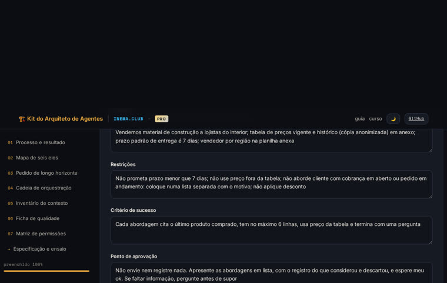
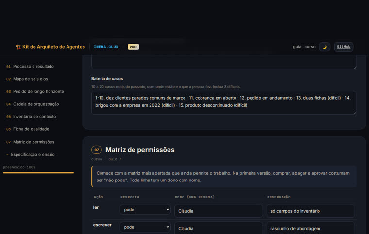

Sete modelos preenchíveis, no navegador, sem instalar nada: você entra com um processo real da empresa e sai com a página que uma equipe de tecnologia consegue construir, mais o prompt para ensaiar o agente num chat de IA antes.
O curso Arquiteto de Trabalho com IA ensina a redesenhar um processo para humanos dirigirem e agentes executarem. O kit é a parte reutilizável: os sete artefatos que o curso produz, como formulários que geram a especificação sozinhos.
Processo e resultado, mapa de seis elos, pedido de longo horizonte, cadeia de orquestração, inventário de contexto, ficha de qualidade e matriz de permissões. Preencheu, a especificação aparece montada.
O kit aponta o que falta antes de você entregar: resultado escrito como "planilha enviada", sem ponto de aprovação, permissão sem dono, matriz frouxa, contexto preso na cabeça de alguém.
Um botão monta o prompt com a especificação dentro. Cole num chat de IA: ele faz o papel do coordenador, respeita a matriz, aplica a ficha e devolve o que faltou.
Tudo roda no seu navegador. Os dados ficam no armazenamento local da página, não saem para nenhum serviço. Você pode exportar um arquivo para guardar ou levar para outro computador.
Cada bloco tem uma dica de uma linha com a regra do curso e campos com exemplos reais. As tabelas (cadeia, inventário, ficha, matriz) crescem com um botão.
A especificação em texto aparece no fim da página e se atualiza a cada tecla. Copie, imprima em PDF ou baixe como .md.
Descreva um caso fictício, copie o prompt de ensaio e cole no chat. Cada lacuna que voltar vira uma linha nova em algum bloco.
Nada para instalar. Para o ensaio simulado, qualquer chat de IA que aceite texto longo (ChatGPT, Claude, Copilot).
Chrome, Edge, Firefox ou Safari. Funciona no celular, mas as tabelas ficam melhores no computador.
# abra o app https://inematds.github.io/kit-arquiteto-agentes/
Que se repete toda semana, envolve mais de uma pessoa e cujo erro custa dinheiro ou cliente. Se estiver em dúvida, faça a aula 1 do curso.
# o curso, se quiser o método inteiro https://inematds.github.io/pffia/
A especificação não tem dado de cliente. O caso da bateria entra com nomes e valores inventados: o chat é um serviço fora da empresa.
# exemplo de caso
Cliente Ferragens Sol, sem compra há 120 dias,
último produto: 40 sacos de cimento em maioUma sessão de 30 a 60 minutos para o primeiro processo. Os seguintes levam metade.
O botão "carregar exemplo" preenche os sete blocos com um caso completo de reativação de clientes. Leia a especificação gerada no fim da página para ver o tamanho e o tom esperados. Depois "zerar".
abrir https://inematds.github.io/kit-arquiteto-agentes/ # → carregar exemplo → ler "Especificação em uma página" → zerar
Escreva o resultado dizendo o que a pessoa do outro lado passa a saber ou ter. Nas decisões, comece cada linha com R (regra) ou J (julgamento). O kit avisa se o resultado ficou como "planilha enviada" ou se nenhuma decisão tem R/J.
Decisões R · cliente tem cobrança em aberto? não abordar J · vale exceção de prazo para este cliente? # J fica com a pessoa
As cinco peças traduzem o mapa: objetivo é o resultado, contexto e restrições vêm das decisões de regra, critério é a verificação, aprovação é onde exceções e julgamentos entram. Sem critério ou sem aprovação, o kit marca lacuna.
Ponto de aprovação Não envie nem registre nada. Apresente em lista, com o registro do que considerou e descartou, e espere meu ok. # um erro barato não vira caro
Um especialista por tipo de trabalho, entre dois e cinco. Para cada um, a ferramenta e o sistema que alcança, com a pergunta "tem porta de serviço?" (sim, não, ?). Escreva as regras do coordenador e o que o verificador confere.
+ especialista # menos de 2 ou mais de 5 → o kit avisa Levanta a lista e o histórico · buscar no cadastro · cadastro de clientes · porta: sim
Uma linha por informação que o agente precisa. Na coluna "acessível", escolha o motivo quando não for: na cabeça de alguém, formato, sem porta de serviço. Essas linhas aparecem na especificação marcadas como trabalho antes do agente.
+ linha Catálogo atual · na cabeça do estoque · conversa · não: na cabeça de alguém · Jorge
Condições observáveis, cada uma numa faixa (tolerável, bloqueante, proibido). Parar e chamar separados, no máximo três motivos para chamar. Na matriz, as sete ações já vêm na escada padrão da primeira versão; ajuste e dê um dono a cada linha que não for "não pode".
Matriz # ler/escrever: pode · alterar/enviar: com aprovação · comprar/apagar/aprovar: não pode enviar · com aprovação · dono: vendedor da região
Leia a lista de lacunas abaixo da especificação e resolva o que der. Descreva um caso fictício, copie o prompt de ensaio e cole no chat. Cada item da lista de "o que faltou" vira uma linha nova em algum bloco. Rode com três casos: um comum, um difícil e a exceção.
copiar prompt com a especificação # cole no ChatGPT / Claude / Copilot baixar .md · imprimir / PDF · exportar (.json) # guardar ou levar para outro computador
Caso de reativação de clientes de uma distribuidora de material de construção, o mesmo fio condutor do curso.


O kit é deliberadamente simples: uma página, sem conta, sem servidor.